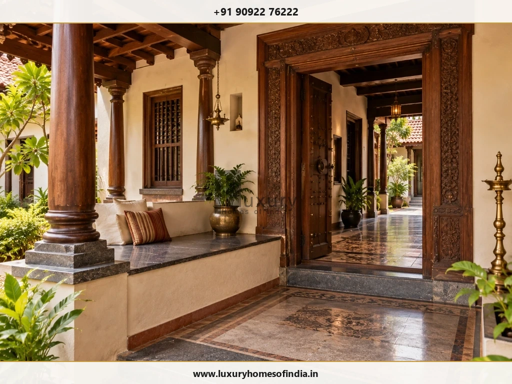
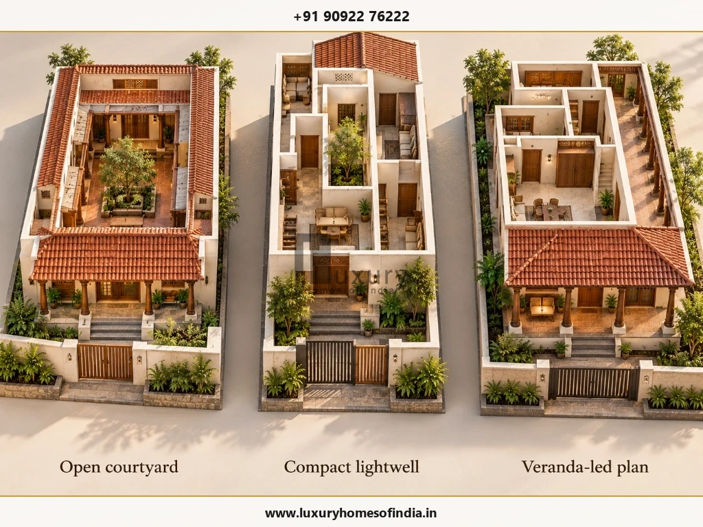
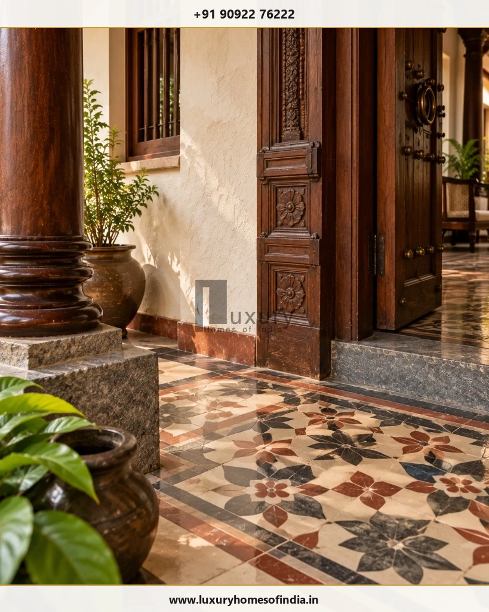
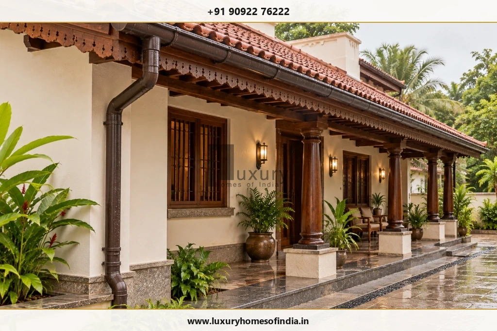

Executive Summary: Chettinad Architecture for Modern Living
A Chettinad-style home combines the architectural character of traditional Tamil Nadu with the practical requirements of contemporary living. Inspired by historic mansions associated with the Chettinad region, this design approach is recognised for features such as welcoming thinnai verandas, central courtyards or mutrams, decorative pillars, carved timber doors and patterned Athangudi tiles.
Modern homeowners can incorporate these elements selectively rather than reproduce an entire historic mansion. The right approach depends on the plot, family requirements, budget, maintenance preferences and local building regulations. Before construction begins, homeowners should coordinate the floor plan, structure, ventilation, daylight, rainwater drainage, waterproofing and material specifications.

1. Understanding Chettinad Architecture
Chettinad architecture is associated with the historic settlements and opulent mansion houses of the Nagarathar (Nattukottai Chettiar) mercantile community in southern Tamil Nadu. Its distinct character reflects deep regional building wisdom, extraordinary artisan craftsmanship, multi-generational family life, and a sophisticated fusion of indigenous Tamil forms with global design elements.
Traditional Chettinad mansions were renowned for their axial spatial sequence: transitioning gracefully from the street through a raised entrance portico, into a series of open central courtyards (mutrams), flanked by private residential wings, pillared corridors, and extensive dining verandas. These features were never merely decorative; their spatial arrangement governed daylighting, passive cross-ventilation, social hierarchy, and ceremonial gatherings.

For contemporary homeowners in Chennai, the essential lesson is to master the spatial principles behind the style before selecting ornamental finishes:
Core Design Brief Questions:
- Arrival Sequence: How should the main entrance transition from the public street and car park into private living quarters?
- Courtyard Feasibility: Can the plot accommodate an open-to-sky courtyard or a compact skylit lightwell without squeezing essential room dimensions?
- Craftsmanship Priorities: Which authentic traditional materials (Athangudi tiles, Burma teak doors, stone pillars, lime plasters) should be prioritized in the construction budget?
2. Signature Features of a Chettinad-Style House
2.1 Traditional Entrance and Thinnai Veranda
The entrance establishes the home's architectural soul. A traditional thinnai is a raised, covered veranda with built-in masonry seating positioned at the front threshold. Historically, it served as an informal pavilion to receive guests, converse with neighbours, and relax during cool tropical evenings.
In a contemporary luxury home, the thinnai can be reinterpreted with polished granite or marble seating slabs, integrated warm LED up-lighting, ornamental timber ceiling rafters, and an artisan-carved solid teak main door. On compact urban plots, keeping the thinnai proportionate ensures the entrance feels inviting without eating into essential car parking or living room depth.
2.2 Central Courtyard or Mutram
The central courtyard (known in Tamil as the mutram or naduveedu) is the beating heart of Chettinad domestic architecture. By introducing an open-to-sky void in the centre of the home, it draws diffused natural light deep into the floor plate and functions as a thermal chimney, drawing warm air up and out while welcoming cool breezes into surrounding verandas.

Critical Technical Checks Before Approving a Courtyard:
- Location & Footprint: Does the courtyard proportion support comfortable room dimensions around it, or does it fragment the living areas?
- Rainwater & Sump Discharge: In Chennai's intense monsoon downpours, an open courtyard must have heavy-duty recessed grated drains, dedicated non-clogging drain lines, and high-capacity storm overflow outlets.
- Multi-Layer Waterproofing: The courtyard floor and perimeter wall bases must be treated as sunken slabs with robust elastomeric polyurethane waterproofing membranes.
- Security & Insects: Contemporary courtyards often feature motorized retractable glass roofs, high-level louvers, or concealed stainless steel security grilles with insect mesh.
- Maintenance Access: Ensure safe access to inspect drains, clean skylight glass, and maintain internal landscape planters.
2.3 Decorative Pillars and Colonnaded Verandas
Carved pillars create rhythm, grandeur, and an unmistakable sense of enclosure. Historic mansions utilized solid Burma teak, rosewood, or black granite pillars resting on moulded stone plinths.
In modern construction, it is vital to distinguish between structural columns and decorative pillars. Concrete RCC columns engineered by a structural consultant must carry upper-floor and roof loads. Authentic timber or stone elements can be designed as column wraps or standalone veranda supports with engineered steel flitch plates.
2.4 Athangudi Patterned Tiles
Handmade in the village of Athangudi in Sivaganga district, these iconic cement tiles are celebrated for their vibrant mineral pigments, floral and geometric motifs, and mirror-like glossy finish achieved through glass mould casting.

Practical Athangudi Tile Verification Checklist:
- Thickness & Leveling: Athangudi tiles are hand-cast and typically 18–22 mm thick. The base floor mortar bed must be prepared accordingly.
- Batch Variations: Because colours are blended by hand using local sand and cement oxides, slight batch variations are natural. Always order 10–15% extra for future repairs.
- Curing & Polishing: Tiles require water immersion curing followed by traditional polishing using rice husk or fine sandpaper. Never use industrial diamond floor polishing machines.
- Location Suitability: Ideal for living rooms, pooja spaces, and covered verandas. Avoid wet bathroom shower enclosures where smooth finishes can become slippery.
2.5 Lime-Based Plaster (Chettinad Vellai / Egg-White Plaster)
Traditional Chettinad walls were coated with a legendary polished lime plaster made from slaked shell lime, egg whites, marble powder, and ground seashell extracts. The resulting walls had a smooth, cool, porcelain-like sheen that remained breathable in hot climates.
Today, specialised heritage plaster contractors can recreate traditional lime and stucco finishes for feature accent walls, pooja rooms, and entrance lobbies. Note that lime plaster requires specialized curing and cannot substitute for structural waterproofing on damp-exposed surfaces.
2.6 Timber Doors, Carving and Traditional Joinery
The Chettinad main door (often called the Nilai vasal) is a masterpiece of woodworking. Characterized by thick carved frames, auspicious motifs (Gajalakshmi or floral rosettes), heavy brass strap hinges, and solid drop-ring knockers, it makes a commanding architectural statement.
A balanced modern design prioritises one or two bespoke heritage woodwork features (such as the main entrance and courtyard colonnade) while specifying sleek, concealed modern joinery for wardrobes and utility spaces to manage the budget.
3. How to Plan a Modern Chettinad-Style House
Adapting heritage architecture for modern family living requires a systematic 5-step architectural planning methodology:
4. Choosing Materials for Chettinad-Style Construction
Selecting authentic materials requires balancing aesthetic heritage with durability, coastal weather resistance, and maintenance practicality:
| Material / Feature | Potential Application | What to Verify Before Ordering |
|---|---|---|
| Athangudi Tiles | Foyer, living room, pooja room, and sheltered verandas. | Verify thickness consistency (18–22 mm), edge uniformity, batch pigment variance, slip resistance, and traditional husk polishing method. |
| Teak & Hardwood Joinery | Main entrance door, pillar surrounds, and ornamental rafter accents. | Verify timber seasoning (moisture content under 12%), anti-termite chemical pressure treatment, and structural fixing anchors. |
| Lime Plasters (Vellai) | Feature accent walls, pooja niches, and dining focal points. | Check substrate masonry compatibility, multi-coat application process, 21-day curing timeline, and moisture exposure. |
| Natural Stone / Granite | Thinnai seating benches, threshold steps, and courtyard plinths. | Specify flamed or honed non-slip finishes for outdoor areas; ensure solid masonry support under cantilevered seating slabs. |
| Clay Roof Tiles (Mangalore) | Sloped veranda eaves, porch canopies, and terrace pavilions. | Check underlying waterproof membrane (SBS or EPDM sheet), steel purlin spacing, wind-uplift ties, and concealed rainwater gutters. |
| Brass Accessories | Door knockers, drop handles, tower bolts, and hanging lamps. | Specify solid forged brass with clear protective lacquer to prevent rapid tarnishing in coastal Chennai saline air. |
5. Designing for Chennai's Coastal Climate
Traditional Tamil architecture was intrinsically bioclimatic. In Chennai's hot and humid tropical climate, incorporating traditional elements dramatically improves indoor comfort when properly engineered:

Shading & Cross-Ventilation
Deep veranda overhangs (chajjas) shield external masonry walls from direct tropical sun, reducing radiant heat gain by up to 5°C. High ceilings (11 to 12 feet) combined with louvered timber clerestory vents encourage natural stack ventilation.
Monsoon Rainwater Management
Chennai receives concentrated, intense rainfall during the Northeast Monsoon. Sloped roofs must integrate seamless concealed zinc or aluminium valley gutters leading into vertical downpipes connected directly to site rainwater harvesting percolation pits.
6. How Much Does Chettinad-Style Home Construction Cost?
The construction cost of a Chettinad-inspired residence depends heavily on the extent of bespoke craftsmanship, authentic material sourcing, and structural engineering complexity. While a standard luxury home in Chennai may range from ₹3,200 to ₹4,500 per sq ft, a bespoke heritage-crafted home with extensive carved woodwork and Athangudi flooring often ranges from ₹4,200 to ₹6,500+ per sq ft.
To prevent cost overruns, homeowners should organize the project into clearly defined procurement packages:
Structured Construction Cost Packages:
- 1. Design & Municipal Approvals: Architectural drawings, structural vetting, MEP coordination, CMDA/GCC permit fees.
- 2. Civil Shell & RCC Structure: Earthwork, pile/raft foundation, RCC columns, beams, brickwork, and roof slabs.
- 3. Pitched Roofing & Waterproofing: Structural steel trusses, marine plywood underlayment, waterproofing membranes, clay tiles.
- 4. Specialist Finishes: Authentic Athangudi flooring, handmade border tiles, lime-plaster accent walls, flamed granite.
- 5. Bespoke Joinery & Woodwork: Solid teak main door, carved pillar sleeves, wooden ceiling rafters, brass ironmongery.
- 6. Building Services (MEP): Concealed plumbing, VRF air conditioning, home automation, ambient LED architectural lighting.
- 7. Landscaping & External Works: Thinnai steps, compound wall with terracotta coping, stone driveway paving, rainwater harvesting.
- 8. Contingency Reserve: A dedicated 8–10% reserve for handcrafted material lead times and on-site variations.
7. Common Mistakes to Avoid
- Replicating a 10,000 sq ft mansion on a 30×40 ft plot: Cramming massive courtyards and multiple verandas onto a small site creates dark, suffocating rooms and poor circulation.
- Prioritizing ornament over functional layout: Carved doors cannot compensate for cramped bedrooms, inadequate wardrobe storage, or awkward kitchen workflow.
- Failing to detail courtyard waterproofing and drainage: An open courtyard without secondary overflow grates can flood interior living rooms during a Chennai cloudburst.
- Using industrial polishing on handmade Athangudi tiles: Heavy rotary diamond disc polishers strip the thin coloured oxide top layer of hand-pressed tiles, permanently ruining the design.
- Neglecting wood treatment in coastal environments: Unseasoned or untreated timber warps during the monsoon and is vulnerable to termites in Chennai's humid climate.
- Overlooking building approvals: Traditional styling must strictly adhere to the Tamil Nadu Combined Development and Building Rules (TNCDBR), setback rules, and height restrictions.
8. Questions to Ask Your Architect or Contractor
Before signing a design and build agreement for a heritage-style home, review these essential questions:
- Can you showcase completed residential projects in Tamil Nadu that integrate traditional courtyards and handcrafted finishes?
- How will the central courtyard or lightwell perform acoustically, thermally, and in terms of rainwater drainage on my specific plot?
- Which elements are load-bearing structural columns and which are non-structural decorative timber wraps?
- Who is responsible for directly sourcing authentic Athangudi tiles and seasoned timber? Are factory mockups included?
- What multi-layer waterproofing system is specified for the courtyard and clay-tiled roof valleys?
- How will modern ducted air conditioning and concealed electrical services be integrated into rooms with traditional high timber ceilings?
- Does the quotation include a line-item Bill of Quantities (BOQ) with exact specifications, brands, and labor allowances?
9. Is a Chettinad-Style Home Suitable for a Modern Family?
Yes—when executed as a thoughtful synthesis of heritage soul and modern engineering. A contemporary Chettinad-inspired home offers unmatched character, warm natural tactile materials, and a deep emotional connection to Tamil Nadu's architectural heritage.
By integrating modern comforts—such as modular kitchens, luxury en-suite bathrooms, motorized courtyard skylights, automated ambient lighting, and efficient air conditioning—homeowners can enjoy the serene beauty of a traditional courtyard home without sacrificing contemporary luxury or functionality.
Frequently Asked Questions
Plan Your Chettinad-Inspired Home with Luxury Homes of India
A well-planned Chettinad-inspired home respects the soul of Tamil architecture while delivering modern comfort, durable engineering, and statutory compliance. Our design team blends heritage craftsmanship with contemporary building science across Chennai and Tamil Nadu.
Written by Luxury Homes of India Editorial
Our editorial and architectural team specializes in bespoke luxury villas, heritage restoration, regional Tamil architecture, and climate-responsive construction across Chennai, ECR, and Tamil Nadu.
Reviewed by: Senior Director of Architectural Heritage & Design, LHI